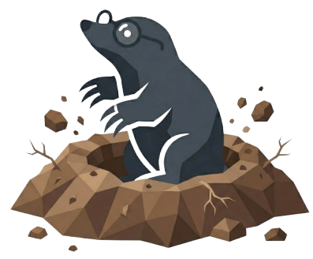

Setting up your environment — this only happens once.
Preparing…

Write, compile, and sync yourLaTeX documents — entirely offline.
Get started
Recent projects
A secure Overleaf window will open. reCAPTCHA, SSO and 2FA all work. Your session persists across restarts.
Loading…
You have 0 unsynced commit(s). Sync with Overleaf now?
Compile to preview
Sync these changes with Overleaf?
Enter a filename (e.g. chapter2.tex)
chapter2.tex
Overleaf requires a Git token to clone projects.Go to Overleaf → Account Settings → Git Integration and copy your token.
Delete all stored data (Overleaf session, Git token, recent projects) and restore Soil to a fresh state.
This will delete all stored data:
Local project files on disk will not be deleted.